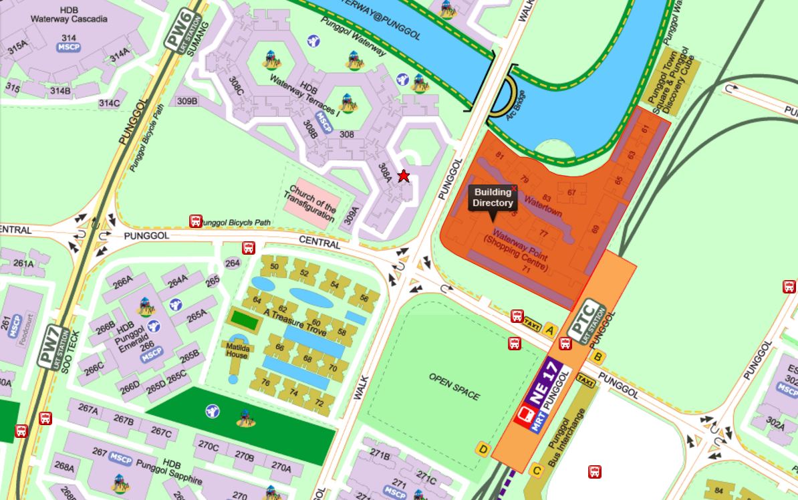

- Address
83 Punggol Central Waterway Point, Singapore 828761 #01-11
- Contact Number
+65 6383 0111
- Email
enquires@fishtastic.com
- Email Response Time
1 - 2 working days
- Operating Hours
10am - 9pm
- Locate Us
Map

|
- Reference list
- 600 Rio Water Pump [Digital image]. (2008, May & june). Retrieved May 20, 2017, from http://www.petmountain.com/photos/product/giant/114420S507412/-/rio-plus-600-200-gph-max-head-4-ft-.jpg
- Premium Fish Tank [Digital image]. (2013, Jan. & feb.). Retrieved May 20, 2017, from http://www.aqua-techuk.co.uk/sites/default/files/imagecache/product_full/EdgeBlack-no-fish.jpg
- Regular Fish Tank [Digital image]. (2014, July 17). Retrieved May 20, 2017, from https://ca-en.hagen.com/File/Image/m/980/530/b1a0dd49-ea93-4e14-b661-51b3e85c70b0
- Round Aquarium [Digital image]. (2014, May & june). Retrieved from https://ae01.alicdn.com/kf/HTB1Rt6OKpXXXXcYXVXXq6xXFXXX9/AQUARIUM-FISH-TANK-AQUARIUM-clear-glass-for-your-desk-decor-mini-Round-the-goldfish-bowl.jpg
- Water Pump [Digital image]. (2003, December 27). Retrieved May 21, 2017, from http://thumbs.ebaystatic.com/images/g/ljwAAOSwxVpXMRHY/s-l225.jpg
- Loh, R. (2017, September 24). The Fish Vet. Retrieved May 22, 2017, from www.thefishvet.com.au
|
{kind=link}
{kind=link}
{kind=link}
{kind=link}